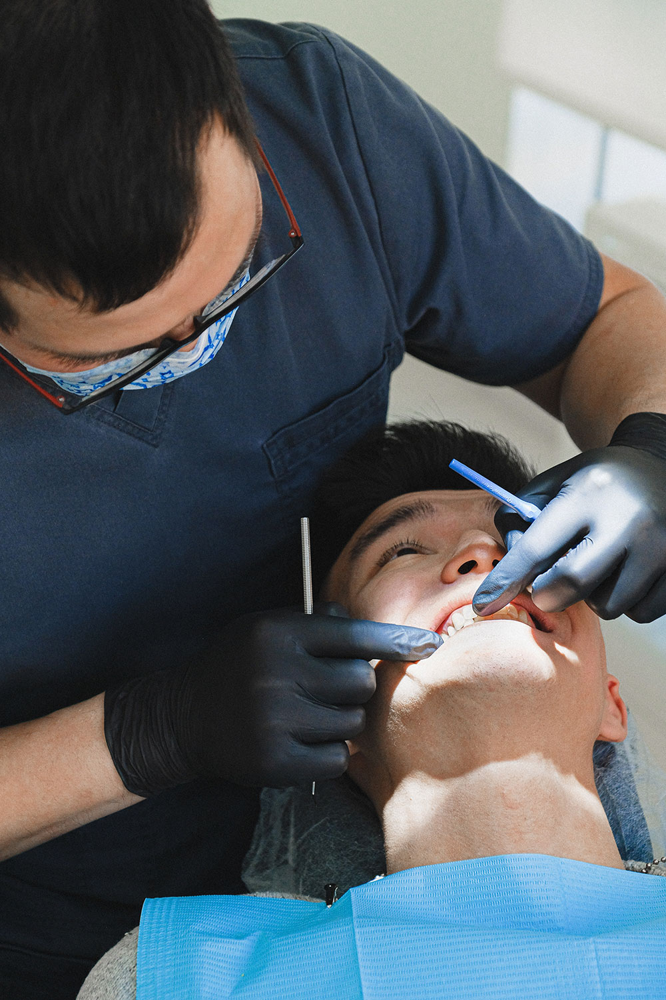
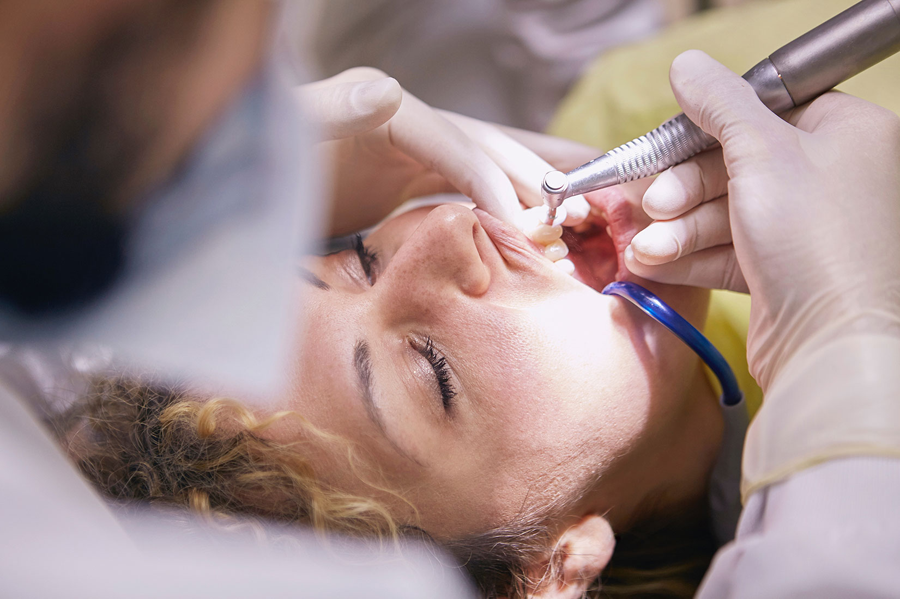

¿Qué es un endodoncia?
Una endodoncia es lo que popularmente se conoce como “matar el nervio”, y se refiere al tratamiento de conductos deldiente. A través de este tratamiento, el odontólogo elimina, de forma total o parcial, la pulpa del diente para posteriormente proceder a su sellado. La endodoncia se suele realizar cuando la caries ha alcanzado la pulpa causando su infección, pero esta no es la única causa. Otras causas que pueden generar una pulpitis y necesitar por tanto un tratamientode endodoncia son: Fracturaso traumatismos dentales. Desgastedental provocado,entreotros, por hábitos comoel bruxismo.
¿Cómo se realiza una endodoncia?
La realización de una endodoncia precisa de anestesia local. Primero se realiza un orificio en la corona deldiente para poder extraer la pulpa afectada y proceder a la limpieza y sellado del conducto.Tras este proceso, el diente queda totalmente insensibilizado.
¿Porqué me duele?
Lo más seguro es que hayas dejado pasar mucho tiempo desde la ultima cita con tu dentista, cuando hay un daño avanzado en el diente el diente responde con dolor espontáneo de leve o intenso. Soy Mildred Martinez Cortes,Odontologa de profesión, con especialidad en Endodoncia. apasionada de la odontología. Confía, estas en buenas manos.